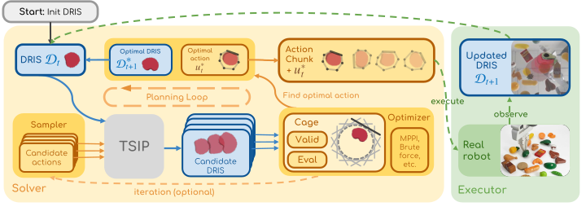

Quick Start#
The ManiDreams pipeline generates candidate actions, predicts outcomes via TSIP, evaluates against cage constraints, and executes the best valid action:
{kind=link}

Minimal Example#
import gymnasium as gym
from manidreams.env import ManiDreamsEnv
from manidreams.cages.geometric import CircularCage
from manidreams.solvers.optimizers.geometric_optimizer import GeometricOptimizer
from manidreams.physics.simulation_tsip import SimulationBasedTSIP
from examples.physics.push_backend_sim import PushBackend
# 1. Create backend (16 parallel ManiSkill environments)
backend = PushBackend()
tsip = SimulationBasedTSIP(backend=backend, env_config={
'env_id': 'CustomPushT-v2multi',
'num_envs': 16,
'render_mode': 'human',
'sim_backend': 'gpu'
})
# 2. Create cage with orbital trajectory
cage = CircularCage(
state_space=gym.spaces.Box(low=-2.0, high=2.0, shape=(2,)),
center=[0.0, 0.0],
radius=0.28,
time_varying=True, # Enable dynamic constraints
orbit_radius=0.2, # Orbital motion parameters
orbit_speed=0.1
)
# 3. Create solver and environment
solver = GeometricOptimizer(config={'horizon': 1, 'num_trajectories': 16})
env = ManiDreamsEnv(
tsip=tsip,
action_space=gym.spaces.Discrete(16),
cage=cage,
solver=solver
)
# 4. Dream: plan under cage constraints
initial_dris, info = env.reset(seed=42)
trajectory, actions, cage_history = env.dream(horizon=50)
Execution Flow#
Initialize: Backend → TSIP → Cage → Solver → ManiDreamsEnv
Plan (
dream()loop):Update time-varying cage position
Generate N candidate actions
Predict outcomes in parallel (TSIP)
Evaluate costs and validate constraints (Cage)
Select best valid action
Execute and repeat
Execute (optional): Replay planned actions on an independent executor environment
What’s Next#
Why ManiDreams? — Architecture overview, design philosophy, and general pipeline
Core Concepts — DRIS, Cage Constraints, TSIP, Solvers
Tasks — Supported tasks and how to add your own
API Reference — Auto-generated documentation from source code